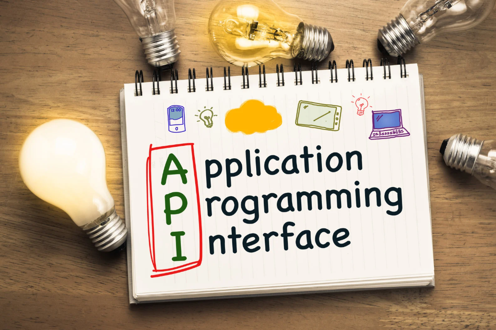

¿Qué Significa API y Qué Es Realmente?
Primero lo primero: ¿qué significan esas tres letras? API es el acrónimo de Application Programming Interface, que en español se traduce como Interfaz de Programación de Aplicaciones.
Pero, ¿qué es en palabras sencillas? Imagina una API como un "contrato" o un conjunto de reglas bien definidas que permite que dos piezas de software diferentes se comuniquen entre sí. No es la aplicación completa, ni la base de datos, ni el servidor; es el intermediario que define cómo se pueden solicitar y entregar información o funcionalidades específicas entre sistemas. Funciona como un traductor y mensajero entre programas que quizás no hablan el mismo "idioma".